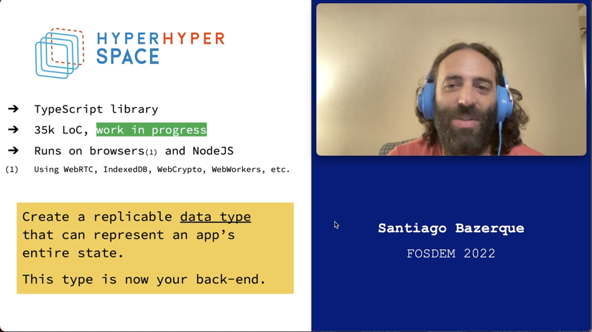
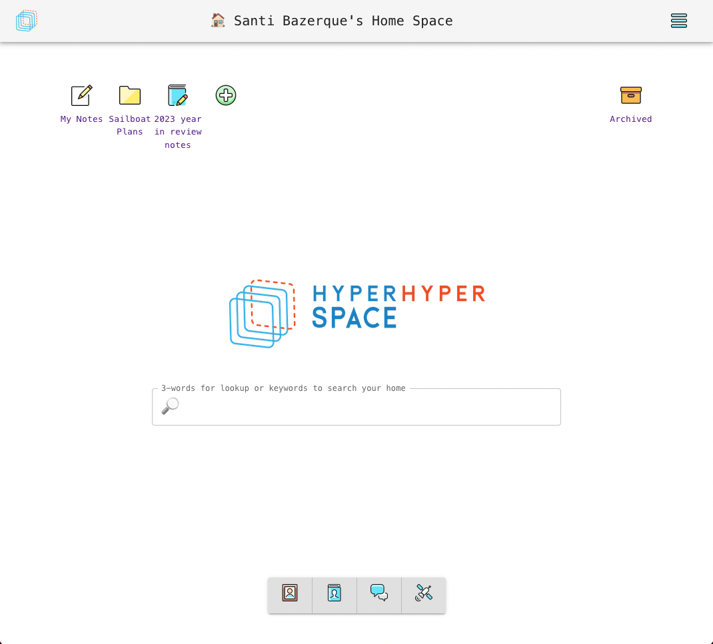
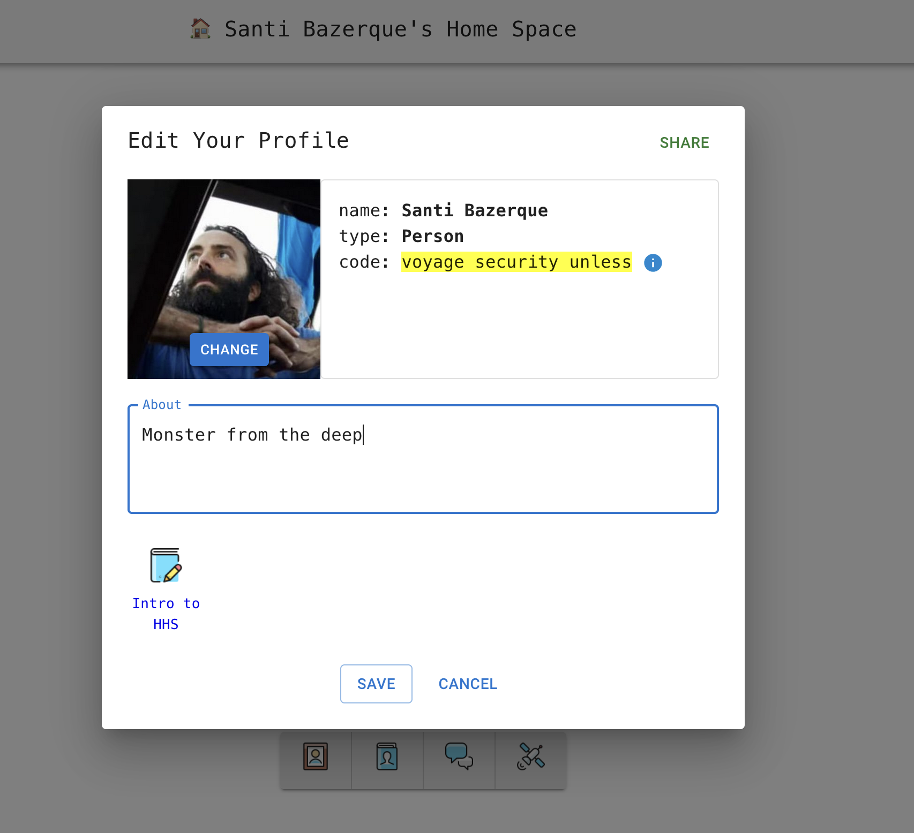
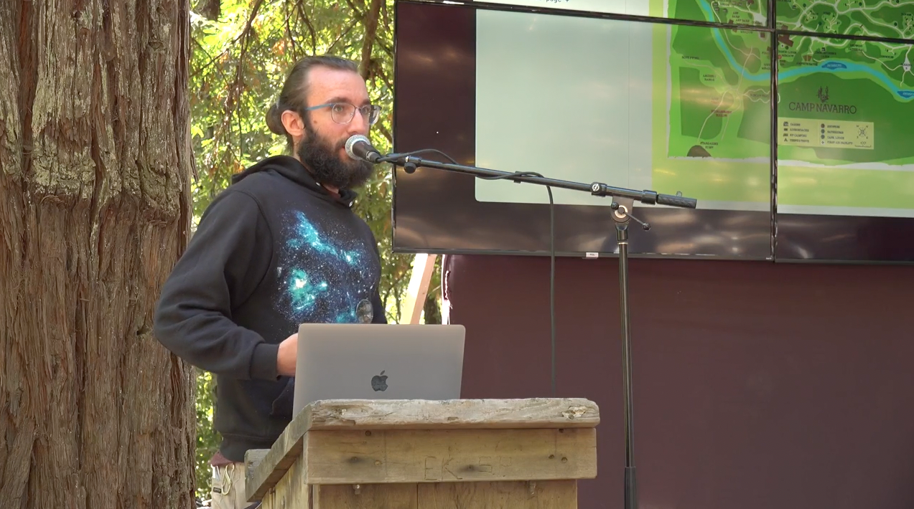

The outlook for a non-for-profit open source software project trying to change the way we use the Internet is usually… rather challenging. But society-at-large is starting to question the ways of the mainstream Internet, and in 2022 it took notice of our existence! And this was fun and crazy and feels full of possibilities we want to share with you all.
So what are we doing? The year started with us getting to present Hyper Hyper Space at FOSDEM '22, the largest open-source conference in Europe:

Things were very technical at that point: we were storing information inside web browsers, doing some fancy things with replicable data types and Byzantine-fault tolerance, trying to do browser-to-browser data sync, etc. You can watch the presentation here.
Shortly after that we were thrilled by the news that the NLNet foundation was going to fund further development of Hyper Hyper Space. The enormously kind folks at NLNet helped us draft a plan for the year, a memorandum of understanding was signed and we were accepted under the umbrella of the NGI Assure program. Hooray!
While in the past the focus of our work was on protocols and algorithms for decentralized data, we decided that this year we'd use the NLNet grant to create a web-based environment where people could interact with each other and do creative work, backed by Hyper Hyper Space. This became the Hyper Browser project (source).
This created a feedback loop where we'd be inspired by imagining new features for the Hyper Browser, and would work on the core library to support them. This in turn opened up new possibilities for the Hyper Browser and… you get the idea.
We knew two things about the environment we wanted to create:
First, we wanted it to be web-based, so folks could casually experiment without installing any software. Since Hyper Hyper Space supports in-browser storage via IndexedDb and browser-to-browser sync through WebRTC, this seemed possible. We'd be using the web to deliver the Hyper Browser, packaged as a JavaScript application within a static site, to the browser - all data would be stored locally and synchronized peer-to-peer.
Second, since spaces (the unit of work in Hyper Hyper Space) are somewhat similar to files, we modeled our web-based environment after the familiar desktop-and-folders interface found on most computers. This is how the web app looks now:

Each of the spaces in this desktop (that we call your Home on Hyper Hyper Space) is stored as a separate IndexedDb database inside the browser. Spaces open in new browser tabs, and their URLs are formed using a hash that uniquely identifies the space. This way, links can be shared like in a regular website. Upon loading a link to a space, the Hyper Browser web application is loaded first, and then the hash embedded in the URL is used to do peer discovery on that space. If any peers hosting the space are found, a local ephemeral copy is created locally and the space is displayed in the browser.
This is somewhat similar to loading a regular website: a local (ephemeral) copy of the fetched HTML is stored and parsed by the browser for display. In the space's case, however, the local copy contains the actual data that was used to render the page, enabling the Hyper Browser to do other things (like editing the content and sending back the changes, or rendering it in richer ways that would be possible from just HTML).
The Home desktop environment is itself also a space, and you can use it to link all your devices, keeping their contents synchronized. It includes some social features in addition to the desktop interface: profiles, chat and a “contacts” section.

If you want to publish your spaces for others to visit, this leaves us with the problem of your spaces going offline if you power down all your devices. While in the future space-hosting in the cloud could be provided, either as a paid service or through some collaborative solution, we felt that a purely browser-based alternative was also interesting. The social layer built into the Hyper Browser is used to this end: if you so choose, you can help the contacts you trust to keep their spaces online, pooling your resources to improve availability.
We're eager to receive feedback on this. If you can spend the time, head to the Hyper Browser website, create a Home and tell us about your experience (discord, mail). You can also clone the repo and run the site locally. Since all the data is handled peer-to-peer, it should make no difference!
The Hyper Browser was the first non-trivial application built on top of Hyper Hyper Space. This led to a lot of additions and improvements. While we were working on this, we were kindly invited to attend a meeting on local-fist software organized by the Ink & Switch research lab in the context of the ECOOP conference in Berlin. This was an amazing experience. We saw a lot of work on tying user interfaces to databases directly, which was very related to our own recent work. We decided that the best way to do this on Hyper Hyper Space was by adding an event system, where changes would bubble up following the nesting of data types in the model. This enabled us to create react hooks that bind entire UI components to the parts of the data that are relevant to them. After working on front-ends that have to keep their internal state in sync with a remote back-end, the simplicity of being able to bind the UI directly to a local replica of the app state, that is kept in sync automatically, is really incredible.
The data types that make up spaces on Hyper Hyper Space are based on conflict-free replicated data types (CRDTs). The most successful usage case for this family of types is currently text editing: they enable editing a shared document while offline, and the modified text is merged reasonably well once connectivity becomes available. However, when one moves to more complex domains (for example when several of these types need to be composed, or application-defined invariants need to be enforced across them), there is not an effective, well-studied way of going about it. We felt that the applications we envisioned would need such flexibility in order to be intuitive and easy to use.
To overcome this issue, we extended the definition of our CRDTs to include special operations that are used to attest that the state of the local replica satisfies some constraints. While these special operations work as proof that the local state was satisfactory at the time they were created, they may become invalidated if operations received at a later time show that these constraints were not actually satisfied (it's just that the local state was not aware of that yet). We also enabled creating operations whose validity is dependent on the validity of other ops. This gives rise to a form of atomicity, where one can guarantee that a set of operations is either executed completely, or completely invalidated, while respecting the convenient convergence properties of CRDTs.
We used these new constructs to equip the wiki space-type included in the Hyper Browser with a capability system that enables having mutable sets of authors and moderators. The new causality features are used to express things like “let Alice delete Bob's message if and only if Alice is currently in the set of moderators” or “let Carol make an edit if and only if the wiki is currently openly editable or Carol is in the set of authors”. If there's a race condition and someone uses a capability that they no longer possess, their changes are reverted automatically by the storage system.
The situation when such a race happens is similar to a rollback in a database system. The coordination-free nature of CRDTs, however, makes it impossible to have the analogous of a commit: we can never know for sure that there isn't an operation out there, that we haven't received yet, that will invalidate a given change, and thus we cannot be sure that it will not be rolled back in the future.
Enabling Hyper Hyper Space's datatypes to incorporate finality guarantees, either as an emergent property of the system or by tapping into an external authority, is part of our research plans for next year.
In the past we've often had trouble communicating just how Hyper Hyper Space is different from other decentralized software projects. While we've gotten better at it with practice, our approach has often been to show rather than tell, and with more working software people are starting to show interest in the project, sometimes even offering to help!
This is very encouraging, and also presents new challenges. As an upstart open source project working on new ideas, our focus has been on validating our approach (mainly by writing code). We'd like to broaden our focus and learn new ways to collaborate. In an effort to make the project more approachable, we plan to improve our documentation and introductory materials next year.
We've also created a Discord instance (invite) and are trying to make our planning and decision-making more community-driven. The experience has been very rewarding.

We worked for a year, now we got at least 5 years' worth of stuff we want to do:
We've picked up a lot of ideas for making the library more intuitive and sync more performant. We want to act on them!
Moderated chat rooms, File sharing + media playing (photos, audio, video), Microblogging / Publishing, what else?
This year we got atomicity via rollbacks. Next year we want to commit!
We want native versions of the Home enviroment for phones, computers and servers.
Right now, software to handle space-types (like the wiki shown above!) comes bundled with the Hyper Browser. We'd like spaces to be able to deliver their own software, that’d run in a sandbox and have fine-grained access to system resources and personal information. This idea just screams Wasm out loud 😃
Hyper Hyper Space-based applications define their data model programmatically now. We'd like to have a declarative language for schema definitions, and possibly constraints (at least some of them).
Yes, this year we'll finally work on documentation! 🤞
Throughout this year we were funded by NLNet's NGI Assure program. We're now working on getting funding to continue our work in 2023. If you'd like to help, you can support us through Open Collective or drop us a line at hello@hyperhyperspace.org.
You can also contribute coding/interface design/ideas/etc. by joining us in Discord and GitHub!